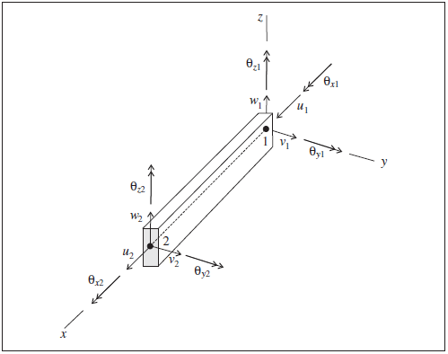
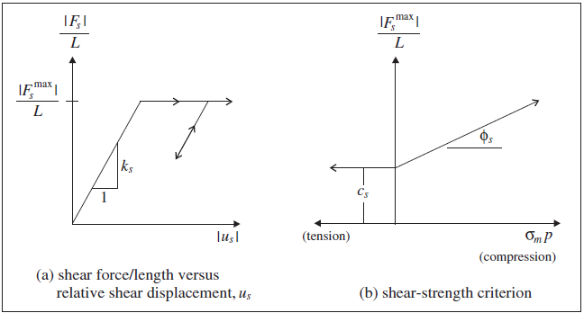
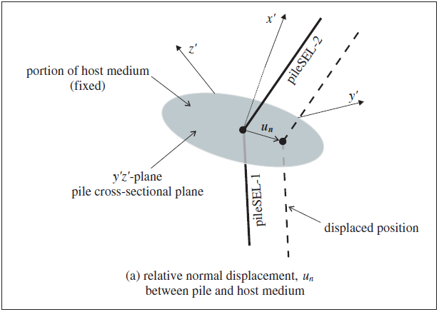
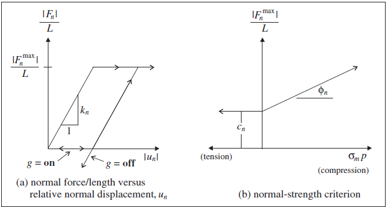
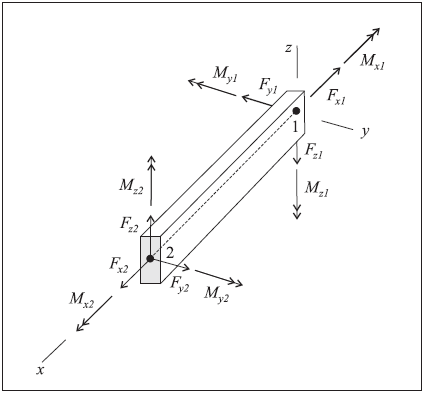

桩结构单元
力学行为
各桩结构单元由其几何、材料与耦合弹簧性质定义。桩单元假定为位于两节点之间、具有均匀双对称截面性质的直线段。任意弯曲的结构桩可建模为由桩单元集合构成的曲线结构。桩单元的刚度矩阵与梁单元相同；但除提供梁的结构行为（包括可指定极限塑性弯矩）外，桩与网格之间还发生法向（垂直于桩轴）与剪切向（平行于桩轴）的摩擦作用。就此而言，桩兼具梁与锚索的特点。除侧壁摩擦效应外，还可模拟端承效应（见 轴向受载桩（Axially Loaded Pile））。桩单元适用于模拟与岩土体之间同时存在法向与剪切向摩擦作用的结构支护构件，如基础桩。
还有一种特殊材料模型作为桩单元的扩展，用于模拟锚杆支护的性状。该模型通过指定 设置桩单元锚杆标志属性命令（structure pile property rockbolt-flag） 开启（on） 激活，可计入支护周围围压的变化、桩与网格之间材料的应变软化行为以及桩的拉伸断裂。
各桩单元都有各自的局部坐标系，如 图 1（Figure 1） 所示。该系用于指定截面惯性矩与所施加的均布荷载，也用于定义构成单根桩的各桩单元上力与力矩分布的符号约定（见 图 5（Figure 5））。桩单元坐标系由其两个节点位置（图 1（Figure 1） 中标为 1 与 2）以及向量 \(\bf Y\) 定义。单元坐标系的定义使
- 形心轴与 \(x\) 轴重合，
- \(x\) 轴由节点 1 指向节点 2，且
- \(y\) 轴与 \(\bf Y\) 在横截面平面（即法向沿 \(x\) 轴的平面）上的投影对齐。

图 1：桩单元坐标系与各单元所用梁有限单元的 12 个活动自由度
桩单元坐标系可用 结构桩单元属性方向 y（structure pile property direction-y） 命令修改。（若未指定 \(\bf Y\)，或它与局部 \(x\) 轴平行，则 \(\bf Y\) 默认为全局 \(y\) 或 \(x\) 方向中与局部 \(x\) 轴不平行的那个。）单元坐标系可用 Pile 绘图项查看，并用 结构桩单元列表系统局部（structure pile list system-local） 命令打印。节点连接关系可用 结构桩单元列表信息（structure pile list information） 命令打印。
桩单元所用全部节点的节点局部系方位在一组循环开始时（或执行 执行计算时步（model cycle） 0 命令时）自动设定，使 \(x\) 轴与使用该节点的所有桩单元的平均轴向方向对齐，\(yz\) 轴在桩横截面平面内任意取向。
桩支持大应变滑动（把 slide 性质设为 开启（on）），此时在大应变模式下运行时，插值位置（桩节点用于与网格单元之间传递力与速度——见 结构单元连接（Structural-Element Links））将随网格迁移。这可计算桩的大应变破坏后行为，此时桩节点与网格单元之间发生显著滑动。若某桩节点移出所有网格单元，则即便该节点后来又移回网格单元内，也不会重建与网格单元的连接；不过在桩节点于网格单元之间滑动期间，该连接保持完好。
桩通过剪切与法向耦合弹簧与网格相互作用。耦合弹簧是非线性弹簧-滑块连接件，在桩节点处（经由自各桩节点发出的连接）在桩与网格之间传递力与运动。剪切耦合弹簧的行为与注浆锚索的剪切行为相同，如 浆体环的剪切行为（Shear Behavior of Grout Annulus） 所述。法向耦合弹簧的行为包括可模拟荷载反向以及桩与网格之间间隙的形成。法向耦合弹簧可模拟宿主介质围绕桩挤压的效应。剪切与法向耦合弹簧以及锚杆逻辑的表述在以下三个小节中给出。行为以 桩性质（Pile Properties） 所列桩单元性质描述（相关记号汇总参见该列表）。
剪切耦合弹簧的行为
桩-网格界面的剪切行为兼具黏聚与摩擦性质。其建模方式与注浆锚索体系相同（见 浆体环的剪切行为（Shear Behavior of Grout Annulus）），只是把浆体性质替换为相应的剪切耦合弹簧性质：(1) 刚度 \(k_s\)；(2) 黏聚强度 \(c_s\)；(3) 摩擦角 \(\phi_s\)；(4) 外露周长 \(p\)。桩在剪切方向的力学行为用这些参数以及有效围压 \(\sigma_m\)（同样在 浆体环的剪切行为（Shear Behavior of Grout Annulus） 中定义）表示于 图 2（Figure 2）。注意各桩单元对应的剪切耦合弹簧性质在桩节点处取平均。


图 2：桩单元的剪切向材料行为。
法向耦合弹簧的行为
桩-网格界面的法向行为兼具黏聚与摩擦性质。其建模方式与注浆锚索体系相似，在数值上表示为沿桩轴线各节点的弹簧-滑块系统，如 浆体环的剪切行为（Shear Behavior of Grout Annulus） 所示。桩与宿主介质之间发生相对法向位移 \(u_n\) 时（如 图 3（Figure 3） 所示），桩-网格界面的法向行为在数值上由以下法向耦合弹簧性质描述：(1) 刚度 \(k_n\)；(2) 黏聚强度 \(c_n\)；(3) 摩擦角 \(\phi_n\)；(4) 外露周长 \(p\)；(5) 间隙启用标志 \(g\)。桩在法向的力学行为用这些参数以及有效围压 \(\sigma_m\)（定义见 浆体环的剪切行为（Shear Behavior of Grout Annulus））表示于 图 4（Figure 4）。注意各桩单元对应的法向耦合弹簧性质在桩节点处取平均。


图 3：桩单元法向行为的理想化。


图 4：桩单元的法向材料行为。
桩受侧向荷载时，桩与宿主介质之间可能张开间隙。若荷载反向，桩必须先穿过该间隙才能对另一侧的宿主介质加载。通过把间隙启用标志设为 开启（on） 可考虑间隙效应。当前间隙行为的实现中，对由每个桩节点发出的连接的两个法向方向各存储两个间隙值。这两个间隙值记录沿相应方向的正、负相对位移。因此“间隙”表现为平行四边形，其边与 图 3（Figure 3） 的 \(y'z'\) 轴平行。初始时每个桩节点没有间隙，间隙在最大法向力作用期间发生相对法向位移时沿两个法向方向独立增长。间隙不会闭合，只会扩展。间隙大小可通过 FISH 访问，并用 列出桩单元屈服耦合命令（structure pile list coupling-yield） 命令打印。
锚杆行为
桩单元逻辑有一个扩展版本可用于模拟锚杆支护的性状。这些单元的性状与锚索单元相似，只是还包含抗弯能力。通过调用 设置桩单元锚杆标志属性命令（structure pile property rockbolt-flag） 开启（on） 命令，单元中将包含以下附加行为。
桩单元本身可沿轴向屈服。屈服强度由性质（tensile-yield）指定。
锚杆断裂依据用户定义的拉伸破坏应变（tfstrain）模拟。在每个桩节点处计算基于轴向与弯曲塑性应变之和的应变度量。轴向塑性应变 \(\varepsilon^{ax}_{pl}\) 依据使用该节点的桩单元平均应变累积；弯曲塑性应变先在单元上取平均再累积。总塑性拉应变 \(\varepsilon_{pl}\) 按下式计算
\[\varepsilon_{pl} = \Sigma \varepsilon^{ax}_{pl} + \Sigma {d \over 2} {\theta_{pl} \over L}\]其中： \(d\) = rockbolt diameter; \(L\) = element length; and \(\theta\) = 单元上的平均转角 若该应变超过限值 tensile-failure-strain，则该单元中的力与力矩被设为零，并认为该单元已破坏。
作用于桩单元的有效围压依据安装以来的应力变化计算。单元安装时存储其周围网格中的应力，计算推进过程中，单元周围的有效围压按相对安装状态的应力变化计算。（对默认桩单元，有效围压依据桩周围网格单元中的当前应力状态。）
可指定用户定义表格（coupling-friction-table），在应力非各向同性时给出有效围压的修正因子，其作为偏应力比的函数。默认情况下作用于桩的围压由 围压关系（confining stress relation） 给出。通过用 coupling-friction-table 指定表格并设置 coupling-confining-flag 标志，可对 \(\sigma_m\) 的值施加因子以计入非各向同性应力。
剪切耦合弹簧黏聚力与摩擦角随剪切位移的软化，可通过用户定义表格 coupling-cohesion-table 与 coupling-friction-table 规定。
响应量
桩响应包括作用于桩本身的力与力矩，以及法向与剪切耦合弹簧中的应力、位移与屈服状态。附加耦合弹簧信息包括当前加载方向、围压以及法向弹簧所跟踪的间隙。桩响应可通过 FISH 访问，并
- 用
structure pile list命令打印， - 用
structure pile history命令监测，以及 - 用 Pile 绘图项绘制。
图 5（Figure 5） 中的符号约定为构成单根桩的各单元上的力与力矩分布给出连续描述。它假定构成该桩的各单元方向一致，使其局部坐标系对桩的方位构成连续描述。若桩是用 structure pile create 命令创建的，情况正是如此。如此创建的每个单元的节点按整体桩方向从第一个点指向第二个点排序。节点连接关系可用 结构桩单元列表信息（structure pile list information） 命令打印。

图 5：桩单元端部力与力矩的符号约定（坐标轴表示单元坐标系，端 1 与端 2 对应节点连接列表中的顺序，所有量均按正方向绘出。）
属性
各桩单元具有 22 个性质（另有 7 个性质控制锚杆逻辑，列于 锚杆性质（Rockbolt Properties））：
- density，质量密度，\(\rho\)（可选——动力模式或重力启用时需要）[M/L3]
- youngs，杨氏模量，\(E\) [F/L2]
- poisson, Poisson’s ratio, \(\nu\)
- plastic-moment，Y 与 Z 方向的塑性弯矩承载力，\(M^P\)（可选——若未指定，则假定 \(M^P\) 为无穷大）[F\(\cdot\)L]。若已分别指定 Y 与 Z 方向的塑性弯矩，则该值为其中较大者。
- plastic-moment-y，仅 Y 方向的塑性弯矩承载力，\(M^P\)（可选——若未指定，则假定 \(M^P\) 为无穷大）[F\(\cdot\)L]
- plastic-moment-z，仅 Z 方向的塑性弯矩承载力，\(M^P\)（可选——若未指定，则假定 \(M^P\) 为无穷大）[F\(\cdot\)L]
- thermal-expansion，热膨胀系数，\(\alpha_t\) [1/T]
- cross-sectional-area，截面积 \(A\)［L2］
- direction-y，向量 \(\bf Y\)，其在桩单元横截面上的投影定义单元 \(y\) 轴（可选——若未指定，则 \(\bf Y\) 默认为全局 \(y\) 或 \(x\) 方向中与单元 \(x\) 轴不平行的那个）
- moi-y，关于单元 \(y\) 轴的二次矩，\(I_y\) [L4]
- moi-z，关于单元 \(z\) 轴的二次矩，\(I_z\) [L4]
- moi-polar，极惯性矩，\(J\) [L4]
- perimeter，外露周长，\(p\) [L]
- coupling-cohesion-normal，单位长度法向耦合弹簧黏聚力，\(c_n\) [F/L]
- coupling-friction-normal，法向耦合弹簧摩擦角，\(\phi_n\) [度]
- coupling-gap-normal，法向耦合弹簧间隙启用标志，\(g\)（默认：关闭（off））
- coupling-stiffness-normal，单位长度法向耦合弹簧刚度，\(k_n\) [F/L2]
- coupling-cohesion-shear，单位长度剪切耦合弹簧黏聚力，\(c_s\) [F/L]
- coupling-friction-shear，剪切耦合弹簧摩擦角，\(\phi_s\) [度]
- coupling-stiffness-shear，单位长度剪切耦合弹簧刚度，\(k_s\) [F/L2]
- slide，大应变滑动标志（默认：关闭（off））
- slide-tolerance，大应变滑动容差
材料行为由性质 1-6 描述，截面几何由性质 7-10 描述，耦合行为由性质 11-20 描述。对 梁横截面（Beam Cross Section） 所示的一般截面，极惯性矩 \(J\) 与二次矩 \(I_y\)、\(I_z\) 在单元坐标系 \(xyz\) 中由 这些积分（these integrals） 定义，其中横截面的两个主轴由单元的\(y\) 与 \(z\) 轴定义。
桩单元性质的确定方式与 梁单元（beam elements） 相似。
桩单元的外露周长与耦合弹簧性质应根据所分析问题选取，以代表桩/介质界面的行为。对土中的桩，桩/土相互作用可表示为沿桩身长度由轴向加载引起的剪切响应（如摩擦桩），或表示为加载方向垂直于桩轴线时的法向响应（如用于稳定边坡的桩）。
桩/土相互作用取决于桩是打入还是现浇。该相互作用以沿桩长可发展的抗剪阻力表示。例如打入式摩擦桩主要依靠沿桩身土体的摩擦或黏附获得支承；而现浇端承桩主要依靠桩端附近土体获得支承。
许多情形下无法获得描述桩/土相互作用现场响应的所需性质。不过现场土性的合理认识通常可由标准原位与室内试验提供。此类情形下桩/土剪切响应可由土性估算。若假定与桩/土响应相关的破坏发生在土体中，则 coupling-friction-shear 与 coupling-cohesion-shear 的下限可分别与土的内摩擦角（对 coupling-friction-shear）以及土的黏聚力乘以桩周长（对 coupling-cohesion-shear）相联系。若假定破坏发生在桩/土界面，则可降低 coupling-friction-shear 与 coupling-cohesion-shear 的取值以反映桩面光滑程度。
锚杆性质
若锚杆逻辑处于活动状态（设置桩单元锚杆标志属性命令（structure pile property rockbolt-flag） 开启（on）），则还可（在 桩性质（Pile Properties） 所列之外）赋予 7 个性质：
| (21) | coupling-confining-flag |
激活增量围压逻辑的标志（默认：关闭（off）） |
| (22) | coupling-confining-table |
把有效围压因子与偏应力关联的表格名称 |
| (23) | coupling-cohesion-table |
把剪切耦合弹簧的黏聚力与相对剪切位移关联的表格名称 |
| (24) | coupling-friction-table |
把剪切耦合弹簧的摩擦角与相对剪切位移关联的表格名称 |
| (25) | rockbolt-flag |
激活锚杆逻辑的标志（默认：关闭（off）） |
| (26) | tensile-failure-strain |
拉伸破坏应变（无量纲） |
| (27) | tensile-yield |
轴向抗拉屈服强度（力单位），[F] |
说明这些性质效应的示例见 全粘结岩石加筋拉拔试验模拟（Simulation of Pull-Tests for Fully Bonded Rock Reinforcement）。
Commands & FISH
| 这些内容对您有帮助吗？… | FLAC3D © 2019, Itasca | 原文更新于 2020 年 10 月 8 日 |